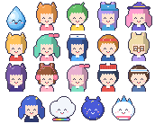

STORY
色のしずくの妖精ぽこが、マルシェにカフェを開きました
色のしずくの妖精「ぽこ」が、マルシェに小さなカフェ屋台を開きました。いろどり村のなかまたちといっしょに、みんなが笑顔になるお店をめざします。
いろどり村・港町・わたゆき高原。3つの町のマルシェをめぐって、ライバル店と売り上げを競います。
七色パレットゲームズのシリーズ第2作。第1作「いろどり村のぽこ」を遊んでいなくても楽しめます。

ぽこと、店員になってくれる いろどり村のなかま18人